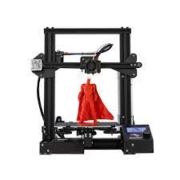
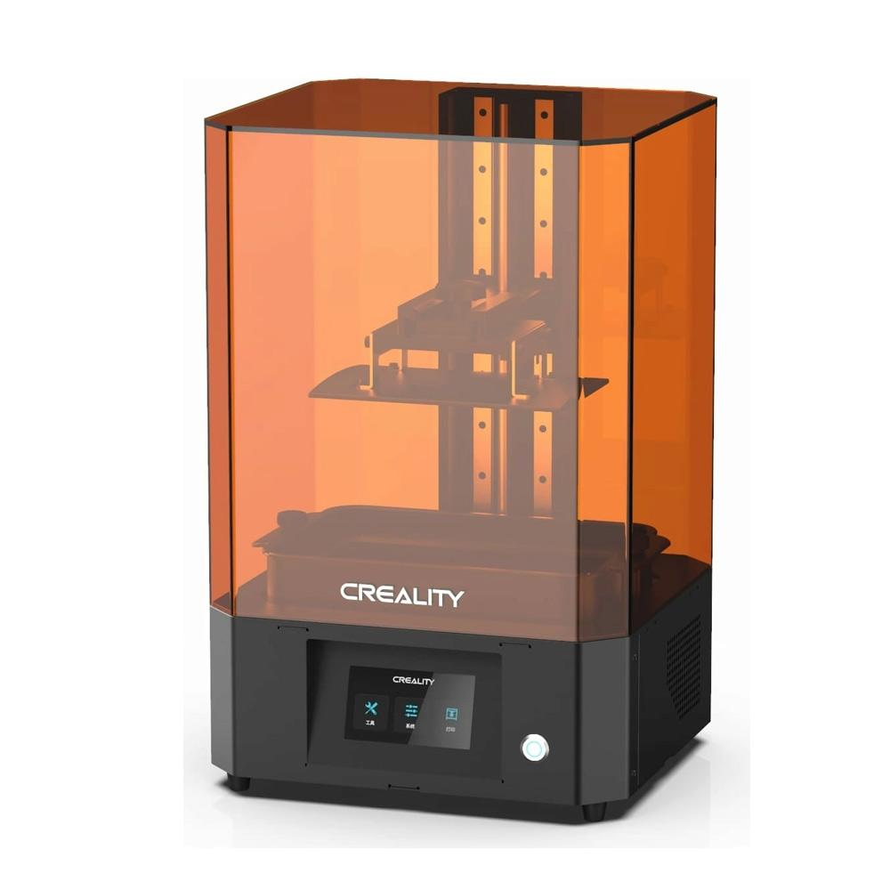

| FDM Printer | Resin Printer |
|---|---|
|  |  |
Fused deposition modeling (FDM), also known as fused filament fabrication (FFF), is the most widely used type of 3D printing at the consumer level. FDM 3D printers work by extruding thermoplastic filaments, such as ABS (Acrylonitrile Butadiene Styrene), PLA (Polylactic Acid), through a heated nozzle, melting the material and applying the plastic layer by layer to a build platform. Each layer is laid down one at a time until the part is complete. |
Stereolithography was the world’s first 3D printing technology, invented in the 1980s, and is still one of the most popular technologies for professionals. SLA 3D printers use a laser to cure liquid resin into hardened plastic in a process called photopolymerization. |